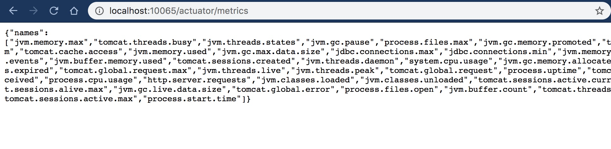
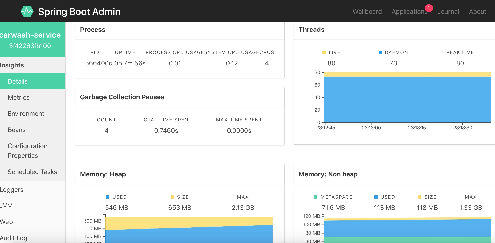

- 00 开篇导读.md.html
- 01 以真实“商场停车”业务切入——需求分析.md.html
- 02 具象业务需求再抽象分解——系统设计.md.html
- 03 第一个 Spring Boot 子服务——会员服务.md.html
- 04 如何维护接口文档供外部调用——在线接口文档管理.md.html
- 05 认识 Spring Cloud 与 Spring Cloud Alibaba 项目.md.html
- 06 服务多不易管理如何破——服务注册与发现.md.html
- 07 如何调用本业务模块外的服务——服务调用.md.html
- 08 服务响应慢或服务不可用怎么办——快速失败与服务降级.md.html
- 09 热更新一样更新服务的参数配置——分布式配置中心.md.html
- 10 如何高效读取计费规则等热数据——分布式缓存.md.html
- 11 多实例下的定时任务如何避免重复执行——分布式定时任务.md.html
- 12 同一套服务如何应对不同终端的需求——服务适配.md.html
- 13 采用消息驱动方式处理扣费通知——集成消息中间件.md.html
- 14 Spring Cloud 与 Dubbo 冲突吗——强强联合.md.html
- 15 破解服务中共性问题的繁琐处理方式——接入 API 网关.md.html
- 16 服务压力大系统响应慢如何破——网关流量控制.md.html
- 17 集成网关后怎么做安全验证——统一鉴权.md.html
- 18 多模块下的接口 API 如何统一管理——聚合 API.md.html
- 19 数据分库后如何确保数据完整性——分布式事务.md.html
- 20 优惠券如何避免超兑——引入分布式锁.md.html
- 21 如何查看各服务的健康状况——系统应用监控.md.html
- 22 如何确定一次完整的请求过程——服务链路跟踪.md.html
- 23 结束语.md.html
21 如何查看各服务的健康状况——系统应用监控
各个微服务模块基本已经就位，但系统运行的情况是怎么样，有没有办法查看的到呢？本篇就带你一起看看如何查看系统运行时的一些信息。
Actuator 插件
细心的小伙伴发现了，每个微服务的 pom 文件配置中都有如下的 jar 引用，这是 Spring Boot 提供的一系列额外特性组件以帮助你监控管理运行中的系统应用。
<dependency>
<groupId>org.springframework.boot</groupId>
<artifactId>spring-boot-starter-actuator</artifactId>
</dependency>
除了需要引入对应 jar 包外，还需要指定的配置。由于默认只开放了 health、info 两个 API，其它 API 要正常使用，需将 exposure 配置项置为 *，才能正常使用 Actuator 暴露出来的接口。
management.endpoints.web.exposure.include=*
下图是 Actuator 提供的所有对外接口，左上角四个是 Web 应用独有的。

启动任意一个应用后，在浏览器中输入网址 http://localhost:10065/actuator/ 就可以查看所有接口地址，响应信息均是以 JSON 形式输出。举例，访问 http://localhost:10065/actuator/metrics，浏览器响应信息如下：
通过访问不同的地址，就可以获取关于服务的相关信息，更多 Actuator 组件相关的文档介绍可参见 Spring Boot Actuator官方文档介绍。但插件返回的信息全部是文本信息，不够直观明了，对监控者而言需要花费不少精力才能解读背后的信息。
Spring Boot Admin
这里引入 Spring Boot Admin，它是一个 Web 应用，官网地址：
它是基于 Actutor，在其上做了 UI 美化，对使用者而言可用性大大提高，下面我们来直观地体验一下。

新建监控服务端
基于 Spring Boot 快速建立 parking-admin 子模块，pom.xml 中加入依赖：
<properties>
<spring.boot.admin.version>2.1.2</spring.boot.admin.version>
</properties>
<dependencies>
<dependency>
<groupId>de.codecentric</groupId>
<artifactId>spring-boot-admin-starter-server</artifactId>
<version>${spring.boot.admin.version}</version>
</dependency>
<dependency>
<groupId>org.springframework.boot</groupId>
<artifactId>spring-boot-starter-web</artifactId>
</dependency>
</dependencies>
application.yml 配置文件：
server:
port: 10090
management:
endpoints:
web:
exposure:
include: \\*
security:
enabled: false
endpoint:
health:
show-details: ALWAYS
spring:
application:
name: parking-admin
应用主类也很简单，增加 @EnableAdminServer 注解即可：
@EnableAdminServer
@SpringBootApplication
public class BootAdminApplication {
public static void main(String[] args) {
SpringApplication.run(BootAdminApplication.class, args);
}
}
启动应用后，服务端就算完工了，浏览器打开 localhost:8081 查看 Spring Boot Admin 主页面：
页面一直处于 Loading 状态，直接到有被监控端应用加入进来。
添加监控端应用
直接在相应的需要监控的模块中，引入相应的 client jar 即可。（版本建议与 spring-boot-admin-starter-server 保持一致）
<dependency>
<groupId>de.codecentric</groupId>
<artifactId>spring-boot-admin-starter-client</artifactId>
</dependency>
相应的 application.properties 中增加配置：
#必须暴露出来，不然admin-server无法获取health数据
management.endpoints.web.exposure.include=*
management.security.enabled=false
management.endpoint.health.show-details=ALWAYS
#admin server address
spring.boot.admin.client.url=http://localhost:10090
就这么两步，其它无须做过多更改，启动主程序类，我们为资源服务为例，返回监控页面，会发现资源服务实例已经被监控到，并罗列在界面中：
点击应用实例，进入更详细的信息查看，至此通过 Spring Boot Admin 实现的应用监控已可以正常使用。
监控虽然已经跨出代码开发行列，但时下 DevOps、SRE 概念的盛行，开发与运维的界线越为越模糊，合作越来越紧密，了解一些监控知识是很必要的。另外，监控微服务是任何一个微服务架构中都不可或缺的一环。但 Spring Boot Admin 仅仅只能监控应用本身的信息，应用所属的宿主机信息无法监控到，你知道有什么方法可以监控吗？